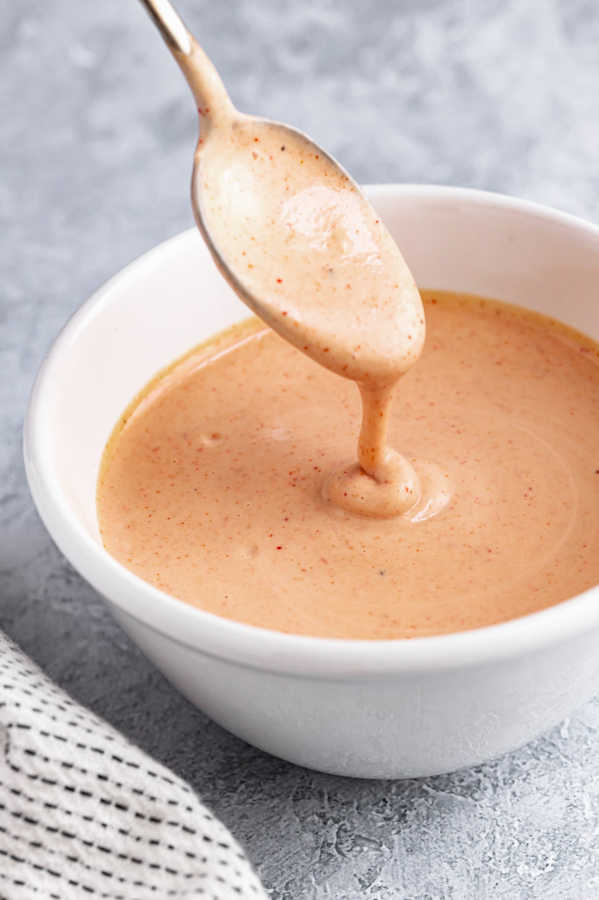

Burger Sauce

Ingredients
- Mayonnaise
- Ketchup
- Mustard
- Garlic powder
- Onion powder
- Hot sauce
- Lemon or vinegar for acidity
Steps
- Add mayonnaise.
- Add half as much ketchup as mayonnaise.
- Add quarter as much mustard as ketchup.
- Taste and add more mayo for creaminess, ketchup for sweetness and mustard for bitterness.
- Add garlic and onion powder to taste.
- Add hot sauce to taste.
- Adjust acidity to preference with lemon juice or vinegar.
I actually wrote this one myself.